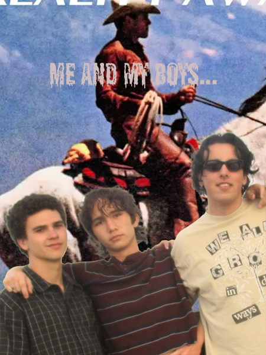
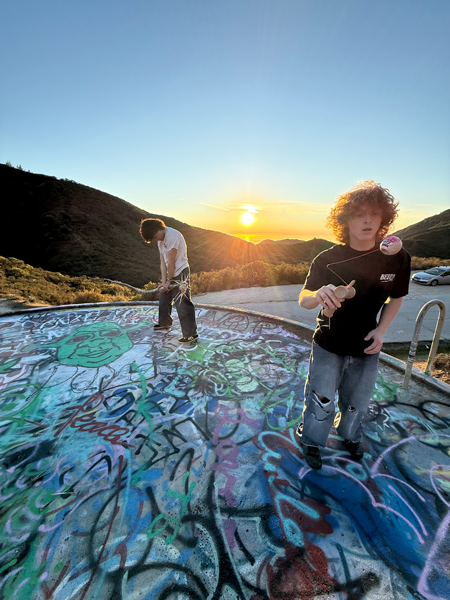

This is a picture of me and my friends, Paulo on the left and Avery in the middle, from my hometown of Santa Barbara! We're pretty awesome ik.
This is a picture of my favorite place, Solvang. It's this really awesome Danish town that's 45 minutes from Santa Barbara (my hometown). They have really good food and it's so beautiful.

Just another pic of my friends, the guy on the right, Mason is someone I've known my whole life. We grew up together since preschool and we talk all the time.